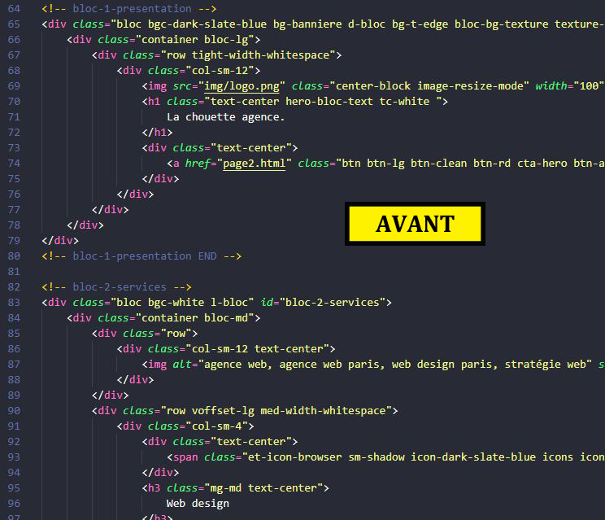

Présentation
Les balises sémantiques sont cruciales, elles permettent de savoir que tel contenu est un element textuel, ou que tel contenu fais parti d'une liste ou d'un titre.
Grace à elles les moteurs de recherche peuvent comprendre le contenu de notre site. Mais ces dernières années Html dans sa version 5 a introduit de nouvelles balises qui sont la
pour aider d'avantage les moteurs de recherche afin qu'ils soient encore plus perfomants. Il s'agit des balises sémantiques structurelles...

Comme indiqué sur l'image , il n'y a aucune balise semantique structurelle, le moteur de recherche pourra parcourir le site et comprendre son contenu. Néanmoins il est certain qu'il devra dépenser d'avantage de ressource.
Grace à l'ajout des balises sémantiques structurelles, le moteur de rechercher utilisera moins de ressource pour comprendre le contenu de notre site. Et surtout il comprendra beaucoup mieux le contenu du site. Cela ne peut être que bénéfique pour notre référencement naturel.
Conclusion
Les moteurs de recherche ont un budget de ressource limité pour parcourir notre site et le comprendre. Plus ce budget de ressource est faible et mieux c'est. Tous ce qui permet de faciliter le crawling et améliorer la compréhension du contenu du site, sera toujours bénéfique pour notre référencement naturel.